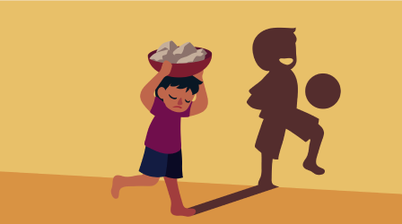
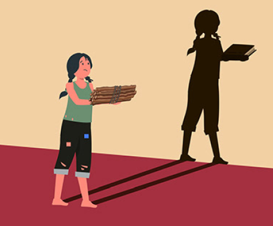

Causes:
Social inequality in Brazil is the result of several historical, economic and social factors.
The regressive tax system, which burdens the poorest with taxes while relieving the upper classes,
contributes to deepening economic disparities. In addition, limited access to quality education hinders
social mobility and perpetuates the cycle of poverty.
Low wages, combined with the poor distribution of economic benefits, concentrate wealth
in the hands of a few, worsening social exclusion. This scenario also reflects the legacy
of colonization and slavery, which structured an unequal society and marginalized black and
indigenous groups.Land concentration and the lack of effective agrarian reform complete this picture,
impeding the economic development of rural communities and small farmers. These elements together perpetuate
inequality, demanding urgent action to promote social justice in the country.

Consequences:
Inequality leads to increased poverty, poor quality food and hunger. This also leads
to poor housing conditions, lack of basic sanitation, poor health, high infant mortality
rates, violence and unemployment. In addition to all these factors, there is stress and
other psychological problems. In 2019, Brazil ranked seventh among the most unequal countries
in the world in the United Nations Development Programme (UNDP) global report. The director of
Oxfam Brazil highlights that there are three main determining factors that keep the country in
this negative position: Racism The gender issue Unequal taxation, which ends up weighing much
more heavily on the poorest population Send feedback Side panels History Saved Translation

Gini coefficient:
In 2023, despite the increase in the average per capita income of households across all strata,
inequality remained pronounced in the country. The Gini index of real monthly per capita household
income remained at 0.518, the lowest in the historical series and the same value as in 2022.